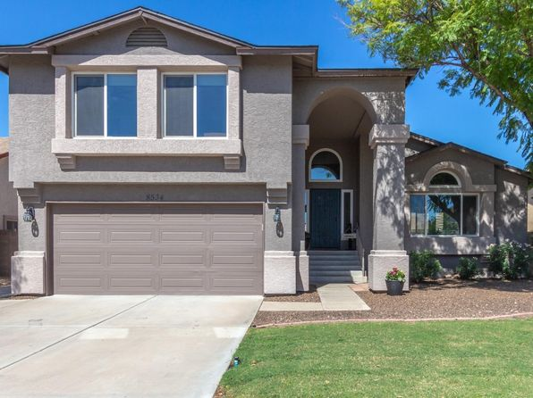
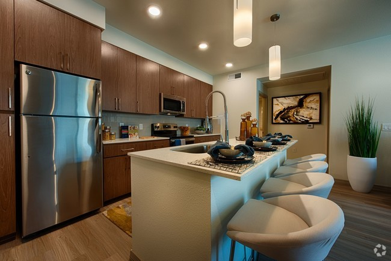
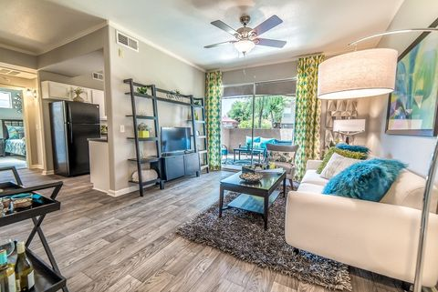

Living Factors
Choosing a Place to Live
When decided where to live it can come down to what you're specifically looking for in a new home.
This page will hep provide reasons why Peoria is the best living ability in Arizona.
Housing and Affordibilty
Affordibilty should be one of your most important priorities when looking for new homes having the ability to be afforded/ inexpensiveness.It's also important to research current homes for pricing, how long the homes have been on sale for,resale values of homes, and in the long-term run.
This link Can provide many of the local houses that are currently AZ real estate and Homes on sale



Crime Rates and Statistics
Compared to other area in Arizona the statistics for best living abilty while having a low crime rate is Peoria.
Shown at this link-->Livability Score Comparison
This shows that doing this brochure has data to back up why Peoria is the best living area vs others in Arizona.
Education
Peoria's highest ranked schools are all placed at an A or higher having many reviews on how great the schools.
This is a good school. Students are friendly, they have good teachers and good councillors. Good sport teams and active clubs. The environment is safe.
Junior Overall Experience
Sunrise Mountain HS has many activities and college courses offered to get a head start on your degree. The academics are priority and the teachers are all Certified Teachers. Many extracurricular activities are available to students. The Cafeteria offers a wide variety of food for breakfast and lunch.
Senior Overall Experience
Some other Schools around the area
Centennial High School
"Centennial High School is a highly rated, public school located in Peoria, AZ. It has 2,024 students in grades 7-12 with a student-teacher ratio of 22 to 1. According to state test scores, 52% of students are at least proficient in math and 45% in reading."
Peoria High School
"Peoria High School is a highly rated, public school located in Peoria, AZ. It has 1,515 students in grades 7-12 with a student-teacher ratio of 22 to 1. According to state test scores, 34% of students are at least proficient in math and 27% in reading."

Climate and Culture
Peoria is a great place for families to live and work. There are plenty of restaurants and places to try new foods, as well as good schools and family activities. Ranked #8 suburbs to live in Pheonix Area. Demograhics show that population size is about 161,383,Unemployment Rate(3.9%), Poverty Rate Percentage of the population below the poverty line(8.1%) and Non-Citizens (3.7%).
Demograpics link